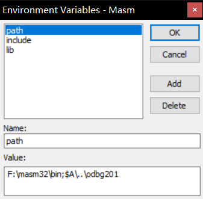
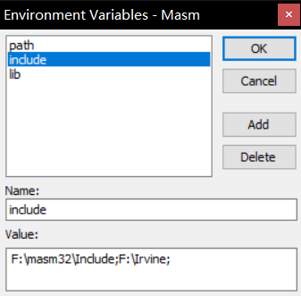

RadASM+Masm汇编开发环境配置指北
Last Update:
Word Count:
Read Time:
RadASM+Masm汇编开发环境配置指北
MA PU 2023.9.22
文件下载
OllyDbg v2.0.1(汉化版本)
RadASM v3.0(存在程序崩溃卡死现象，虽然后续有配置教程，但不推荐，与v2.2.2.4二选一即可)
在后续配置之前默认已经安装好课程要求的masm32以及Irvine32库，下载完之后将各压缩包解压到自己想要的路径即可。
RadASM v2.2.2.4
环境配置
设置语言
菜单->Option->Language->简体中文

文本编码设置
菜单->选项->字体选项->代码编辑

单击代码编辑，选择一个喜欢的字体以及大小（代码推荐宋体）然后点击右下方脚本，选择编码GB2312：

其余字体可以类似根据喜好设置。
路径设置
菜单->选项->设置路径，如图：

只需将$A对应路径改为本机masm32文件夹路径，$E对应路径改为之前解压的odbg201文件夹路径即可，注意路径大小写不敏感，填写时不要有歧义。
环境变量设置
！注意！此处环境变量不是系统环境变量，而是RadASM的环境变量。
菜单->选项->环境变量

其中的path变量可以删除，因为我们已经设置过$A路径，也可以改为本机masm32文件夹路径。
添加变量include，lib，值均为本机Irvine32文件夹路径，示例如下：

至此环境配置基本完成。
使用教程
新建工程
文件->新建工程

可以根据需要选择工程类型，课程涉及到的主要为Win32窗口程序及控制台程序，这里用课程资料中给的masm_code_example中的AddSubAlt.asm以及WinApp.asm分别为例。
选择工程类型以及完成命名后一直下一步即可。
要选择Realease或Debug版本，在打开工程后点击工程->工程选项中选择。（使用Irvine库的程序在Debug版本下构建会有报错LINK : fatal error LNK1000: unknown error; consult documentation for technical support options，目前暂未找到原因，但是未使用Irvine库的程序正常）
编译运行
控制台程序
工程目录结构如下：

将AddSubAlt.asm中的内容粘贴到test.asm中，

这四个快捷键分别为编译(Assemble)，构建(Build)，运行(Run)，构建并运行(Go)。
点击构建会有errLNK2001报错，这是因为这段代码用到了Irvine32库，解决该错误我们需要在代码中加入如下几行：
1 | |
此时再次构建，成功构建，但是此时运行控制台一闪而过看不到结果。
为解决这个问题我们可以在命令行中直接运行.exe文件，但是切换路径非常麻烦，我们稍加配置可以一键打开当前工程目录下的cmd窗口或PowerShell窗口。
点击选项->工具菜单:

点击插入，根据个人习惯不同菜单项为&command line或&powershell，对应的命令分别为CMD.exe或POWERSHELL.exe(若习惯用新版PowerShell而非Windows PowerShell则此处为PWSH.exe)，之后点击确定。
此时在工具菜单中会出现相应的选项，同时图标栏也会出现对应按钮，点击即可快捷打开工程目录下的终端窗口，可以快捷运行程序：

Win32窗口程序
重新新建一个工程test2，选择Win32 App之后一直下一步，将WinApp.asm中的内容粘贴到test2.asm中。
接着构建工程，会发现还是有err LNK2001，同样是因为使用了Irvine32库，因此我们需要在代码中补充：
1 | |
之后重新构建运行即可。
调试相关
利用RADbg.inc简单调试
在使用本调试方法时首先需要在代码中加入以下内容：
1 | |
这种方法只能进行简单的调试，单个程序中只能加最多10个断点，而且并不支持单步调试，只能在断点处查看寄存器的值及特定变量的值。
首先在想添加断点的代码行点击右键，选择断点/切换断点(快捷键Alt+F8)，此时可以再次右键，选择断点/添加变量来添加你希望在该断点处查看值的变量，之后重新构建运行即可。
以InputOutput.asm为例，我在28行添加断点并添加监视变量varA：

利用OllyDbg调试
若要进行更为复杂的调试，我们可以在OllyDbg中进行调试，建议切换工程选项中版本为Debug(即调试)，然后构建工程，点击菜单/构建/Run w/Debug(快捷键 Ctrl + D)即可打开OllyDbg进行调试。
关于具体OllyDebug的用法可以自行学习。
RadASM v3.0
环境配置
首先3.0版本没有找到汉化版，因此只能英文界面操作，不过难度不大。
文本编码设置
依次点击Options->code Editer->code，选择喜欢的中文字体并更改脚本为GB2312:

环境变量设置
3.0版本无法设置路径，所有的包含库，可执行文件，头文件都通过环境变量设置。
点击Options->Environments：
注意默认的$A指的是RadASM的根目录，即RadASM.exe所在的目录。
path项需要写本机masm路径及解压的odbg201路径；
include项需要masm/include路径以及Irvine路径；
lib项需要masm/lib路径以及Irvine路径：

至此环境配置完成。
使用教程
新建工程
Project->new project:

在build中选择工程类型(也可以打开工程后在Project->Project Options中进行修改)（使用Irvine库的程序在Debug版本下构建会有报错LINK : fatal error LNK1000: unknown error; consult documentation for technical support options，目前暂未找到原因，但是未使用Irvine库的程序正常）
这里以Console Realease为例。
编译运行
将AddSubAlt.asm中的代码粘贴到test.asm中，点击构建，有err LINK2001报错，因为使用了Irvine库，因此要添加代码
1 | |
再次构建运行即可，控制台窗口依旧一闪而过，此时点击Tools->command line即可打开当前工程目录下的命令行窗口来运行程序。
Win32窗口程序同理。
调试相关
3.0版本没有RADbg.inc，因此推荐构建完成后使用Ctrl + D快捷键打开OllyDbg进行调试。